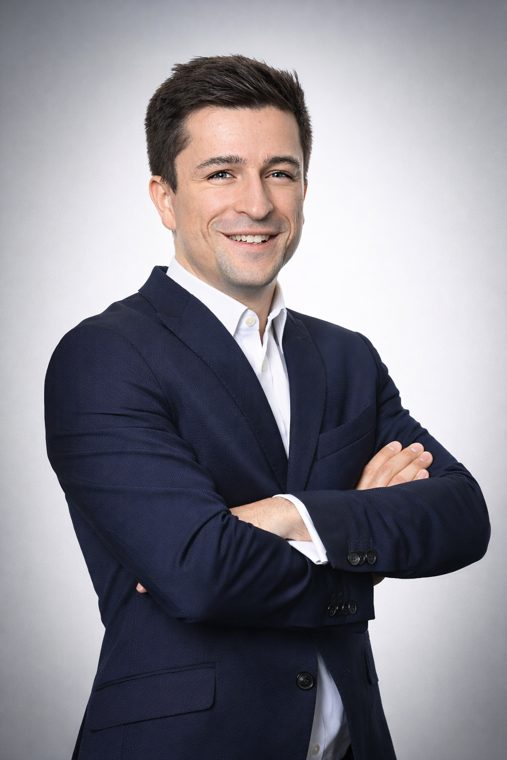
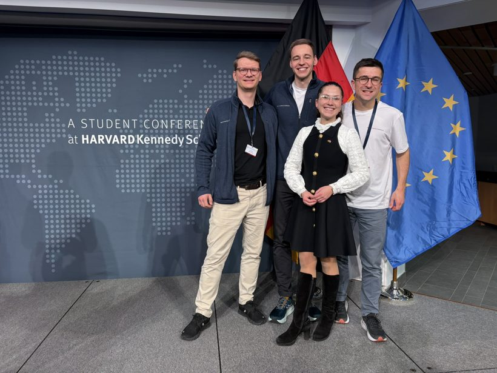
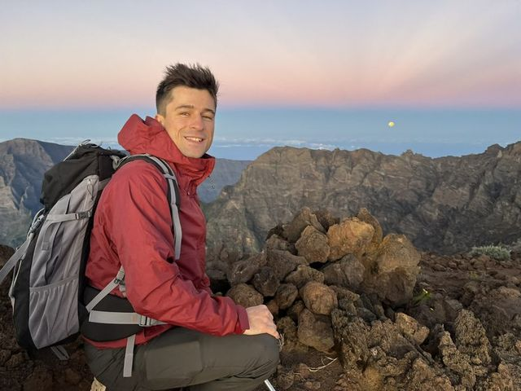
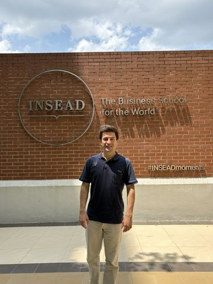
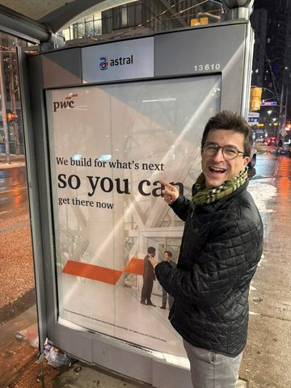
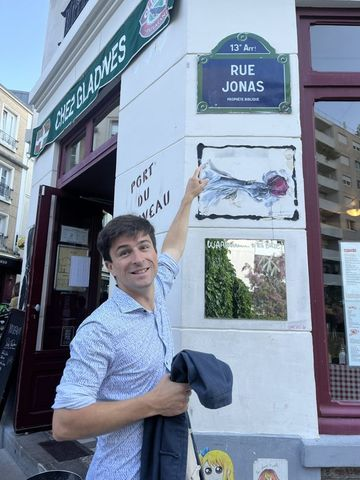
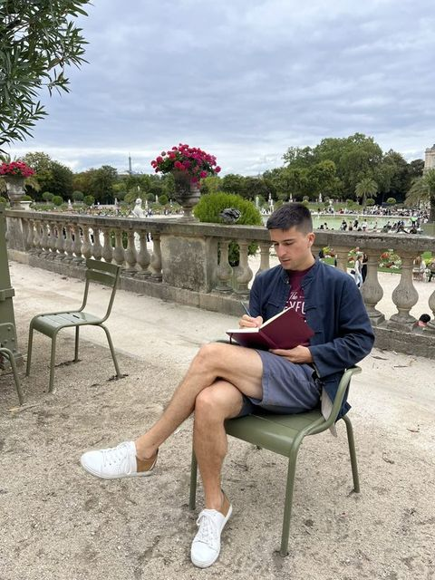

Senior Associate, Strategy& · CEO, mymun · INSEAD MBA
I build software — and rooms — that get people who disagree to actually talk.
I'm a Senior Associate at Strategy& and the founder & CEO of mymun — the Model UN platform I started coding in a garage, now used by 400,000+ students across 140 countries. Currently an MBA candidate at INSEAD.
Now In Singapore for my INSEAD MBA — and perpetually over-caffeinated.



About
Currently pursuing an MBA at INSEAD (Class of Dec 2026), while on educational leave from Strategy&, where I work as a Senior Associate. There I've contributed to projects such as a €10bn business case for an AI Gigafactory and an economic strategy for EXPO Berlin 2035 that gained national media attention. My work focuses on digital transformation, product management, and consulting.
As CEO of mymun, I'm committed to making Model United Nations accessible to students everywhere. The platform is the digital infrastructure conferences and participants run on — 400,000+ users and 11,000+ events across 140 countries — built on a sustainable model so it can serve the community for the long run.





Things I do
-
Strategy&
Senior Associate at PwC's strategy consulting arm (currently on educational leave for the MBA). My work spans digital transformation and product — recently a €10bn business case for an AI Gigafactory and the economic strategy behind Berlin's EXPO 2035 bid, which drew national media coverage.
strategyand.pwc.com → -
mymun
The operating system for Model United Nations — registration, conference management, the whole circus. 400,000+ users, 11,000+ conferences, 140 countries, and a business model that somehow pays for itself.
mymun.com → -
German American Conference
Host and former head of communications of the German American Conference at the Harvard Kennedy School — students, thinkers and leaders from both sides of the Atlantic, working out where the relationship goes next.
germanamericanconference.org → -
Aurel Steinert Stiftung
A foundation I help run that backs the next generation: sustainability-focused startup prizes at KIT, a Student Innovation Lab, and Model UN programs bringing political education into German classrooms.
aurelsteinert-stiftung.de →
Writing

- When life gives you pandemics, make MUN software How a cancelled conference in 2020 turned into the software that became mymun.
- The day we returned to school Training teachers to kick-start Model UN clubs and classes in German schools.
Notes
- America, we have to talk. On the transatlantic relationship, ten years after my first crossing at Niagara.
- The day that reinstalled my optimism in democracy. 100 students, 13 political foundations, one Model Bundestag.
- On the word “current.” What a commercial-arbitration moot taught me about ambiguity — in contracts and elsewhere.
Talks & media


Say hello
The fastest way to reach me is email — I reply to almost everything that isn't a cold sales pitch.
Add to contacts ↓